How to use WMC's MakerBot Replicator 3D Printer
Software
Where to get or make 3D models?
Make 3D files on any 3D modeling software, export 3D model as one of the filetypes listed below:
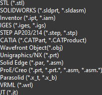
These filetypes are the ones that work with our 3D printer. The most common filetypes that are most recommended are .stl and .obj files.
To get 3D files, I recommend visiting thingiverse.com, a library of 3D models for 3D printing.
How to add 3D models to Makerbot Print?
First, click on the folder icon on the top left of MakerBot Print.
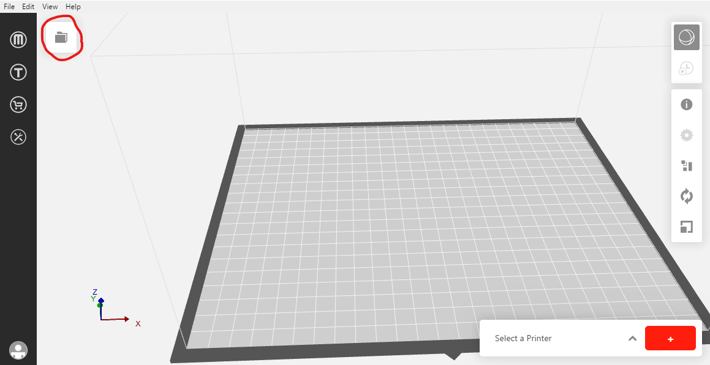
Next, click on 'add models' in the folder tab.
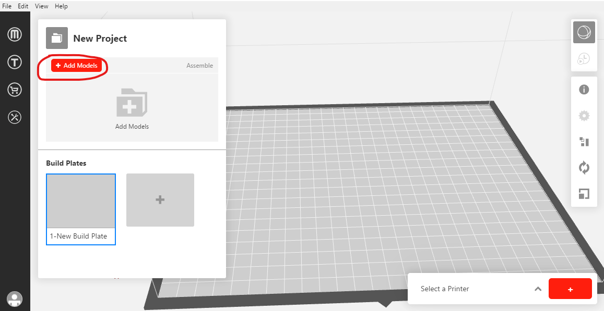
In the file explorer popup, click the desired 3D model.
Transform 3D models in MakerBot Print
On the right panel, select the option 'arrange', 'orient', or 'scale'.
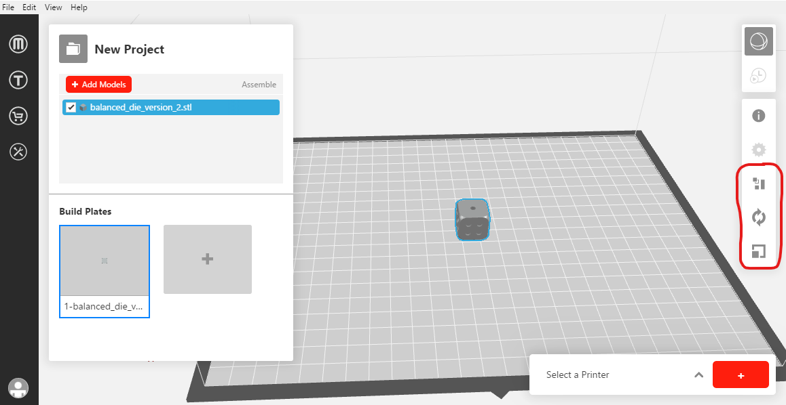
If you want multiple of the same object, click your 3D model, and copy paste command 'ctrl c → ctrl v'
How to print 3D models?
First make sure you have the 3D model shown in the viewport in MakerBot Print.
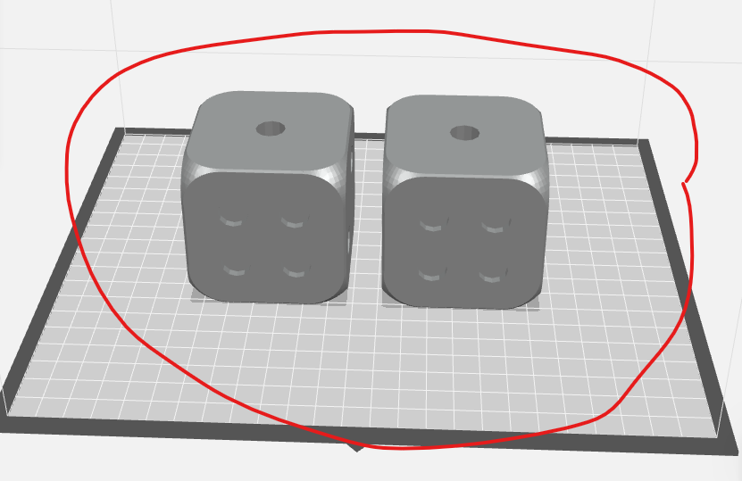
Next, press 'select a printer' in the bottom left, then hover over your desired printer and press 'select'.
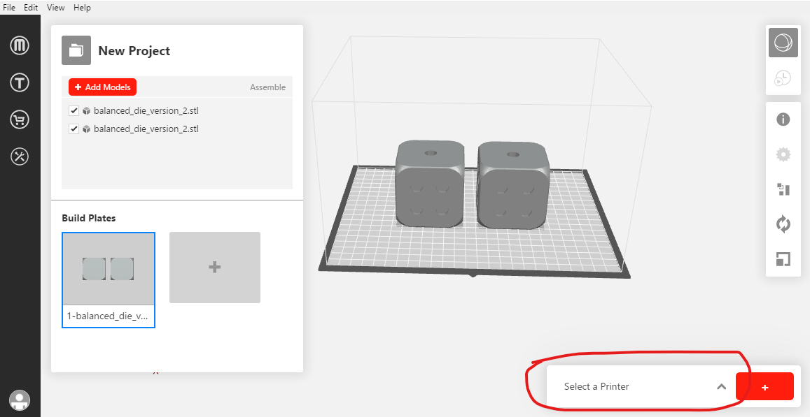
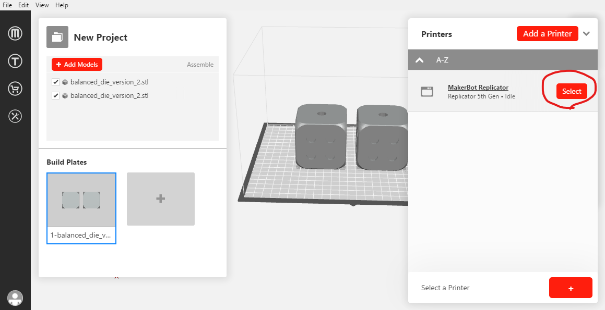
After that, press 'print'.
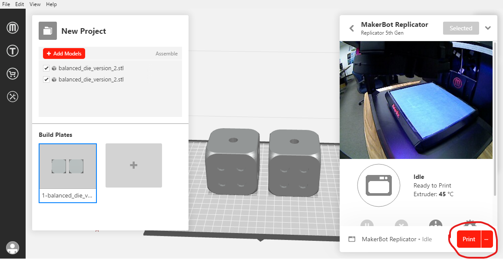
After that, just wait a few minutes, and the printer will start printing the 3D model.
Printer
How to turn on the printer
Locate the on/off switch on the back of the printer where the power chord is.
Next, press the dial located next to the screen.
How to change between filaments
Release and pull up the filament spool tray.
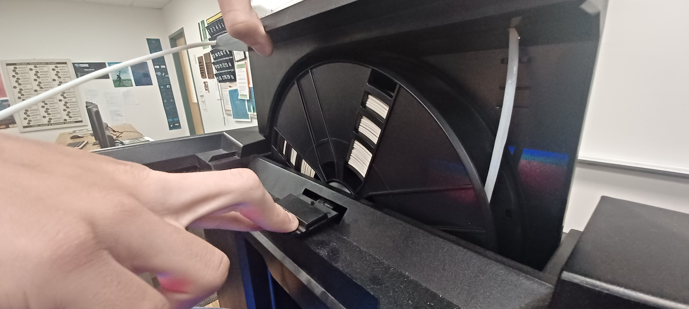
Scroll the dial to the 'filament' tab and click.
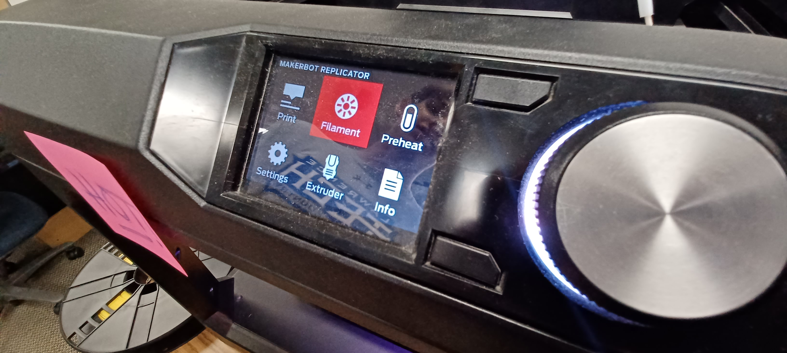
Next, select 'unload filament' in the 'filament' tab.
Wait until filament is unloaded.
Rotate the spool to roll the old filament back up. Then, remove the old filament spool from the printer.
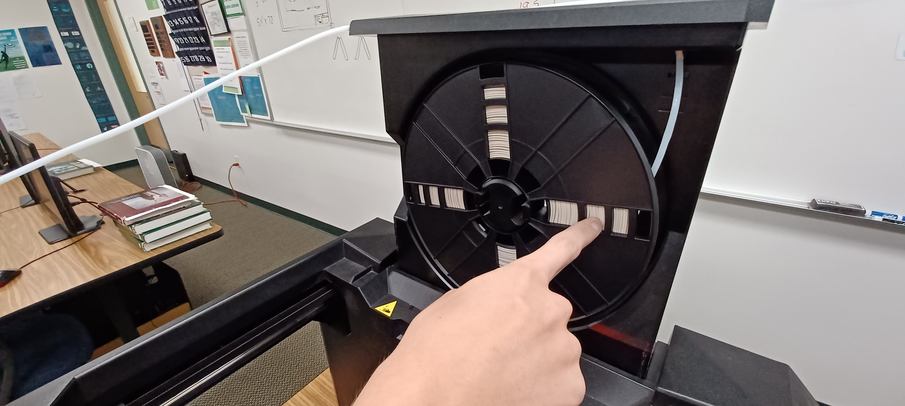
Add the new filament spool to the printer. Feed the filament from the spool into the guide. Rotate the filament spool to guide the filament through the gaurd.
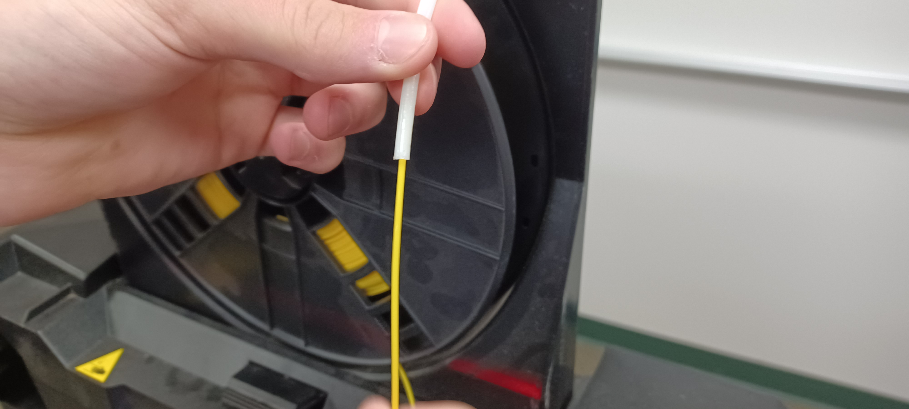
Scroll the dial to the 'filament' tab and click. Select the 'load filament' option.
Feed the filament into the extruder entry, and when the extruder starts to extrude melted filament, press the dial.
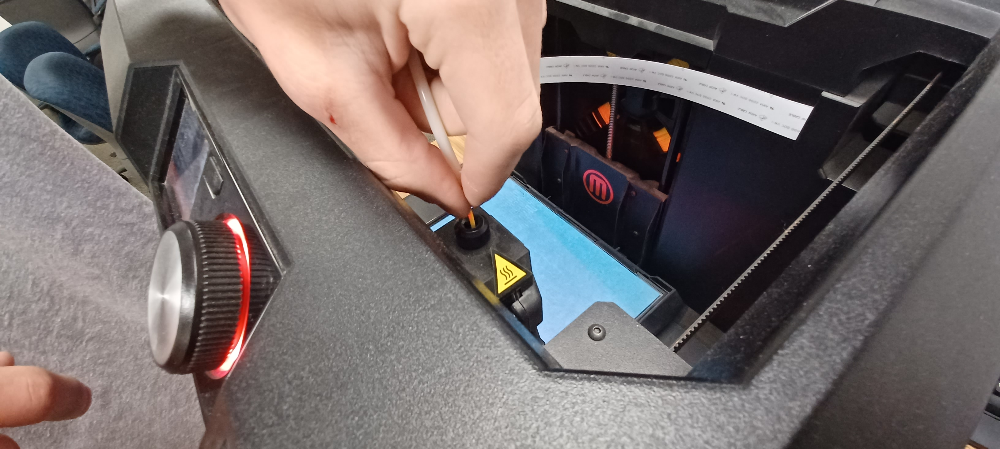
How to turn off the printer
Locate the settings tab on the printer menu, and then scroll to the bottom of the settings tab, and turn off power.
Wait for the printer to shut down completely.
Locate the on/off switch on the back of the printer where the power chord is and switch it off.